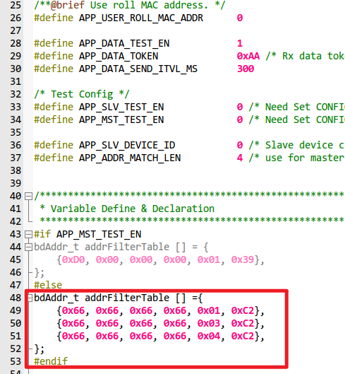
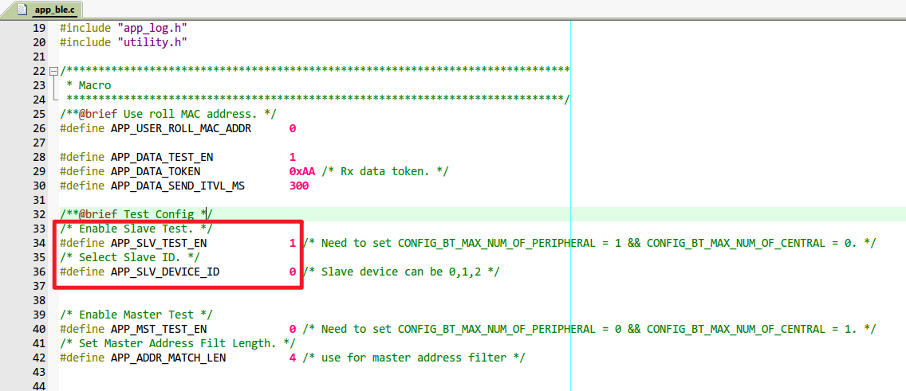
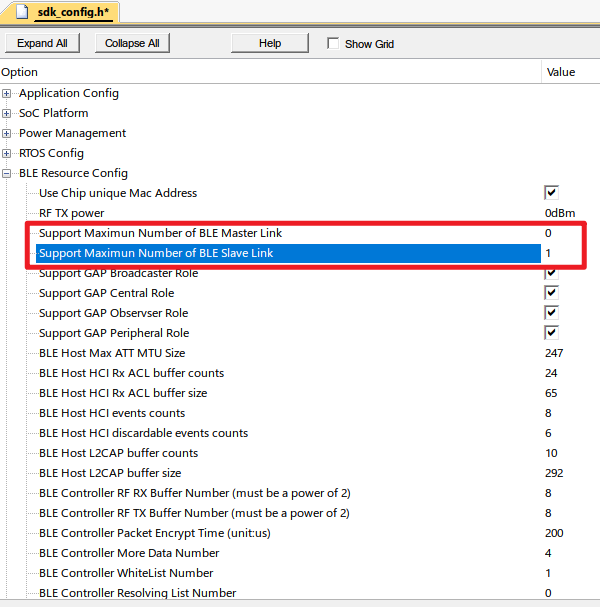
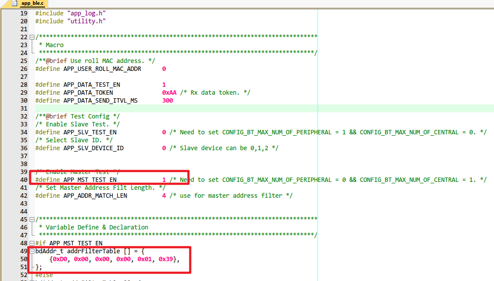
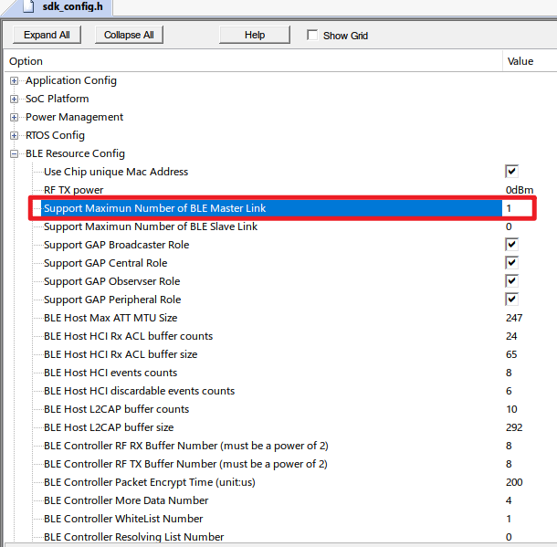

BLE MULTI ROLE¶
1 功能概述¶
此项目演示蓝牙多主多从功能以及多个连接设备之间的数据交互。此工程提供一个设备支持3主2从（也即一个设备作为Master role可以同时连接Peer的3个Slave Role的设备，同时作为Slave Role可以同时被Peer的2个Master Role的设备连接，也即6个设备同时通讯）
工程默认的配置是3主2从，通过修改相关的配置参数可以编译出対测设备的固件。
2 环境要求¶
board:
pan107x evb6个
4 演示说明¶
4.1 编译3主2从固件¶
初次打开工程默认配置就是3主2从，用户需要配置如下参数：
3主2从作为Master Role时是通过蓝牙地址来自动建立连接的，因此，为了测试，用户需要提供3个Peer Slave Role的蓝牙地址并填在app_ble.c文件中的addrFilterTable表中，如下图所示

Peer Slave Role Address Table¶
当然，用户也可以不用修改，只需要将表中的地址设置到対测的Slave Role即可。
4.2 编译对测的Slave Role固件¶
为了与3主2从设备对测，需要编译3个对测的Slave Role固件。用户需要做如下修改：
设置宏
APP_SLV_TEST_EN=1，设置APP_SLV_DEVICE_ID分别为0,1,2，对应3个Slave设备。

对测slave role 配置¶
按下图设置BT_MAX_NUM_OF_PERIPHERAL=1，BT_MAX_NUM_OF_CENTRAL=0

对测slave 设备数量配置¶
编译3个対测的Slave Role固件，需要注意的是，编译时需要修改 APP_SLV_DEVICE_ID =0,1,2（这与蓝牙地址相关） 对应3个対测 Slave Role固件
4.3 编译对测的Master Role固件¶
为了与3主2从设备对测，需要编译2个对测的Master Role固件。用户需要做如下修改：
设置
APP_MST_TEST_EN=1，将待连接的3主2从设备的蓝牙地址填到如图所示的表addrFilterTable中

对测Master设备配置¶
按下图设置BT_MAX_NUM_OF_PERIPHERAL=0，BT_MAX_NUM_OF_CENTRAL=1

对测Master设备数量配置¶
编译工程得到两个对测的Master Role固件，当然，用户也可以使用手机充当Master设备 (发送数据的格式请参看4.5节的内容)
4.4 固件烧录¶
将编译得到的固件通过Jlink分别烧录到对应的pan107 EVB板中，上电设备将自动连接，建议先上电3主2从的设备，然后依次上电其他对测设备。
4.5 数据交互测试¶
设备连接好后（可以通过log查看连接请况），用户可以按pan107 EVB板上的KEY1按键，即可启动数据传输和接收测试。
按键按下以后，3主2从的设备会每间隔1s发送数据到对测的5个设备，同时会接收对测的5个设备发送的数据，并对数据包的计数器以及内容进行检验，如果错误，则会报错，同时通过log输出。
其他对测设备按下按键以后，会每隔1s发送数据到3主2从的设备，同时也会接收3主2从设备发送的数据，并对数据包的计数器以及内容进行检验，如果错误，则会报错，同时通过log输出。
4.6 测试的数据格式¶
本demo演示使用的数据具有如下格式：
包头 |
包内容 |
|---|---|
4字节的包计数器 |
N字节的0xAA或者0x77；3主2从的设备发送N字节的0x77数据，接收N字节的0xAA的数据，対测设备必须相应的匹配 |